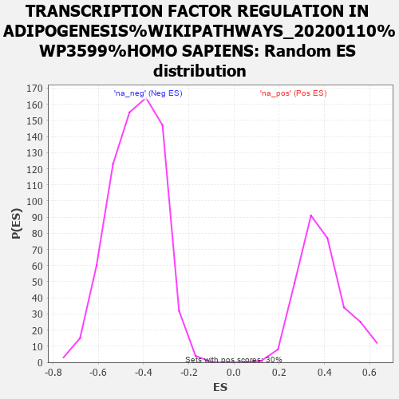

| | | Dataset | MBD2KO_post.rnk |
| Phenotype | NoPhenotypeAvailable |
| Upregulated in class | na_pos |
| GeneSet | TRANSCRIPTION FACTOR REGULATION IN ADIPOGENESIS%WIKIPATHWAYS_20200110%WP3599%HOMO SAPIENS |
| Enrichment Score (ES) | 0.7890122 |
| Normalized Enrichment Score (NES) | 2.0234973 |
| Nominal p-value | 0.0 |
| FDR q-value | 0.011289258 |
| FWER p-Value | 0.188 |
Table: GSEA Results Summary
 Fig 1: Enrichment plot: TRANSCRIPTION FACTOR REGULATION IN ADIPOGENESIS%WIKIPATHWAYS_20200110%WP3599%HOMO SAPIENS
Fig 1: Enrichment plot: TRANSCRIPTION FACTOR REGULATION IN ADIPOGENESIS%WIKIPATHWAYS_20200110%WP3599%HOMO SAPIENS
Profile of the Running ES Score & Positions of GeneSet Members on the Rank Ordered List
| PROBE | GENE SYMBOL | GENE_TITLE | RANK IN GENE LIST | RANK METRIC SCORE | RUNNING ES | CORE ENRICHMENT | | 1 | INSR | | | 143 | 9.294 | 0.1983 | Yes |
| 2 | IRS2 | | | 397 | 6.668 | 0.3300 | Yes |
| 3 | CEBPB | | | 477 | 6.142 | 0.4621 | Yes |
| 4 | LPIN1 | | | 789 | 4.411 | 0.5394 | Yes |
| 5 | SLC2A4 | | | 1018 | 3.620 | 0.6046 | Yes |
| 6 | PCK2 | | | 1032 | 3.554 | 0.6833 | Yes |
| 7 | RXRA | | | 1124 | 3.268 | 0.7502 | Yes |
| 8 | CREB1 | | | 1903 | 1.650 | 0.7332 | Yes |
| 9 | CEBPA | | | 2249 | 1.255 | 0.7374 | Yes |
| 10 | CEBPD | | | 2319 | 1.171 | 0.7588 | Yes |
| 11 | NRIP1 | | | 2412 | 1.083 | 0.7767 | Yes |
| 12 | NR3C1 | | | 2755 | 0.816 | 0.7713 | Yes |
| 13 | IRS1 | | | 2762 | 0.810 | 0.7890 | Yes |
| 14 | FOXO1 | | | 6424 | -0.363 | 0.5433 | No |
| 15 | MAPK8 | | | 7050 | -0.543 | 0.5121 | No |
Table: GSEA details [plain text format]

Fig 2: TRANSCRIPTION FACTOR REGULATION IN ADIPOGENESIS%WIKIPATHWAYS_20200110%WP3599%HOMO SAPIENS: Random ES distribution
Gene set null distribution of ES for TRANSCRIPTION FACTOR REGULATION IN ADIPOGENESIS%WIKIPATHWAYS_20200110%WP3599%HOMO SAPIENS